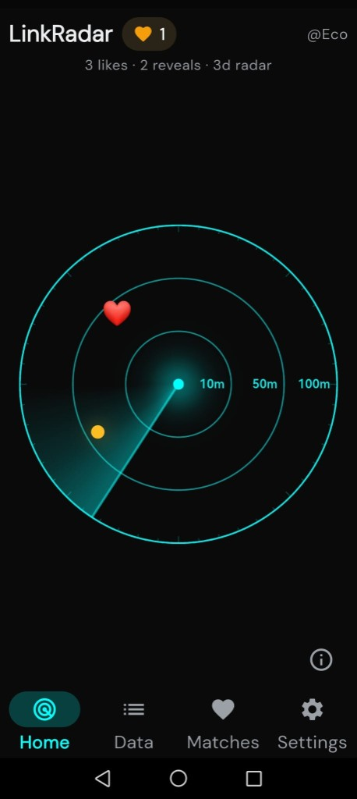
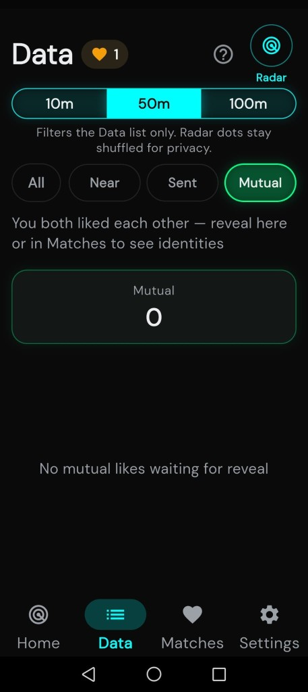
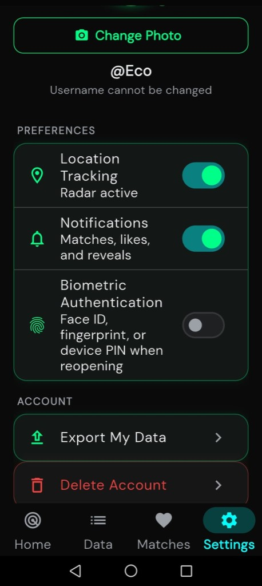

Zone-based radar
See who's nearby in 10m, 50m, or 100m zones. Dots stay shuffled until you both reveal.
Like someone nearby — without the fear of being turned down.
DownloadShow interest without putting your name on the line.
Starting a real connection often comes down to one of the hardest steps: admitting you're interested. LinkRadar lets you like people you discover nearby while you stay anonymous — they never see who you are unless they like you back.
See who's nearby in 10m, 50m, or 100m zones. Dots stay shuffled until you both reveal.
Incoming likes show as a count and yellow radar dots — never a public list of who liked you.
Usernames and photos appear only after both of you confirm — all or nothing.
Push for likes and matches without exposing who liked you in the notification text.
After reveal, optional in-app chat with disappearing text and photos and one-time video.
Export or delete your account in Settings. No precise GPS stored on our servers.



If someone liked you, they appear only as a random dot on Home Radar (not in Data lists) — to keep likes anonymous until you like back or reveal.